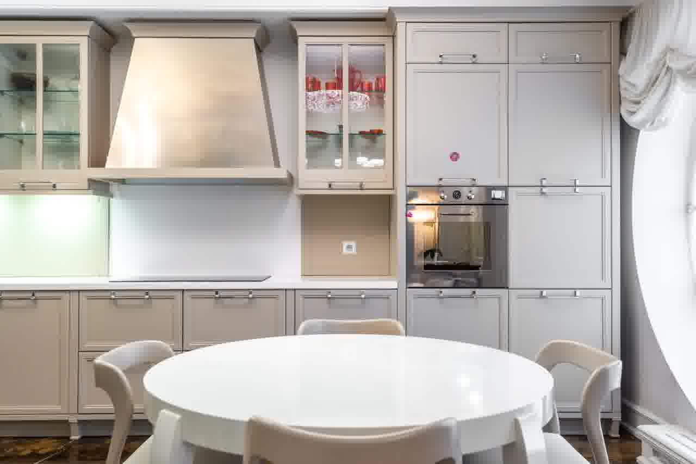
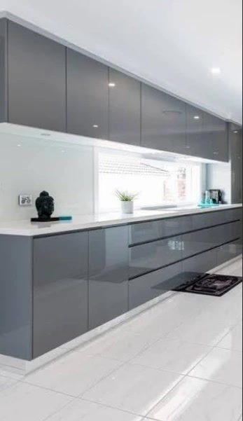
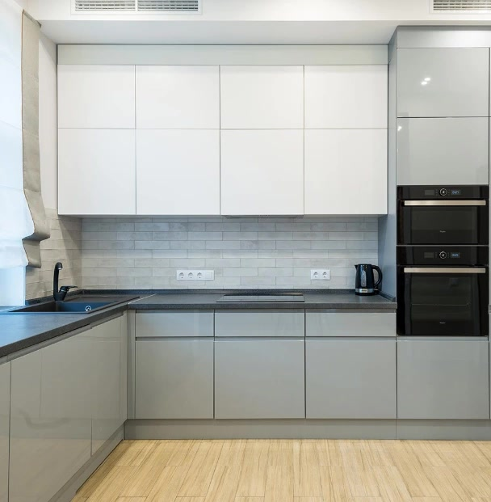
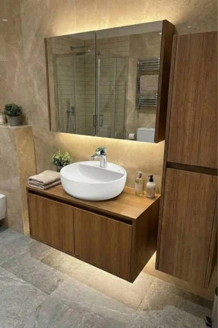

Kapak Çeşitlerimiz
Pendik İçin 5 Popüler Kapak Teknolojisi
Mekanınıza, zevkinize ve bütçenize en uygun kapak modelini atölye kalitesiyle üretiyoruz.

En Çok Tercih Edilen
Membran Kapak Mutfak
Kenar bandsız tek parça vakum presleme. Neme ve suya dayanıklı, country çıtalı veya düz modeller.

Parmak İzi Tutmaz
Matplus Kapak Mutfak
İpeksi kadife dokulu nanoteknolojik yüzey. Asla el veya parmak izi bırakmaz, leke tutmaz.

Ultra Parlak
Akrilik Kapak Mutfak
Orijinal Senosan çizilmez akrilik tabaka. Cam parlaklığında derin yüzey, sararma yapmaz.
Özel Fırın Boya
Lake Kapak Mutfak
Çok katmanlı poliüretan fırın boyası. Sınırsız RAL rengi, kusursuz ipeksi mat doku ve otel lüksü.

Ekonomik & Şık
High Gloss Kapak
Işıltılı UV lak yüzey. Modern ve parlak mutfak arayanlar için bütçe dostu atölye alternatifi.

Komple Çözüm
Banyo & Gardırop İmalatı
Mutfakla birlikte suya dayanıklı lake banyo dolabı, çamaşır dolabı ve füme camlı gardıroplar.